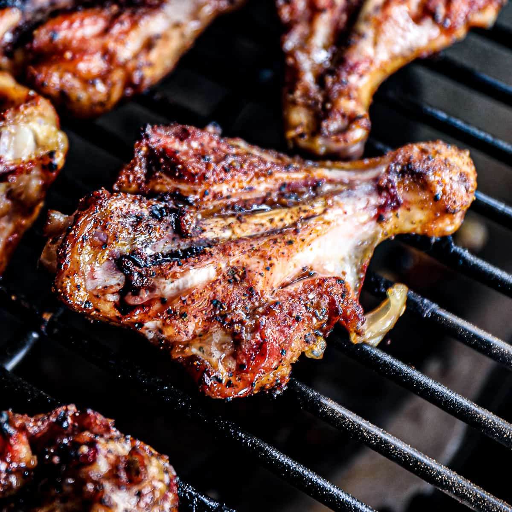

Butterfly Drumsticks
Home

This drumstick recipe is one of my favorite BBQ entrees.
After a long day of work, I just want some food in my stomach.
Usually, this means that I'm hangry and I don't want to be
cooking for too long. This is one of the easiest, most flavorful
chicken recipes I know, and now you'll get to enjoy it too.
Ingredients
- 1lb (16oz) chicken drumsticks
- 2tbs (1fl oz) olive oil
- Your favorite chicken seasoning
- Medium-sized mixing bowl
Steps
- First, take each drumstick and cut down the
line from joint to joint. Going along the bone
and flattening out the drumstick will "butterfly"
it.
- Pat each drumstick dry and place all of them in
the mixing bowl. Drizzle the olive oil over them.
- Once they're coated in oil, sprinkle as little or
as much of your chicken rub as you like. I personally
enjoy Kinder's Woodfired Garlic rub and
use it liberally. Of course, the recommended amount
here comes down to preference.
- Marinate your chicken for at least an hour. For best
results, let is marinate overnight.
- Fire up your grill to high heat. Once the grill has
warmed up, place each drumstick cut-side down so it
keeps its shape. You'll flip the drumsticks once
every 5 minutes for a total of 20 minutes.
- Once your 20 minutes is up, remove the drumsticks into
a serving dish and let them rest for 5-10 minutes. Plate
up with your favorite sides like corn and mashed potatoes.
- Smacznego!